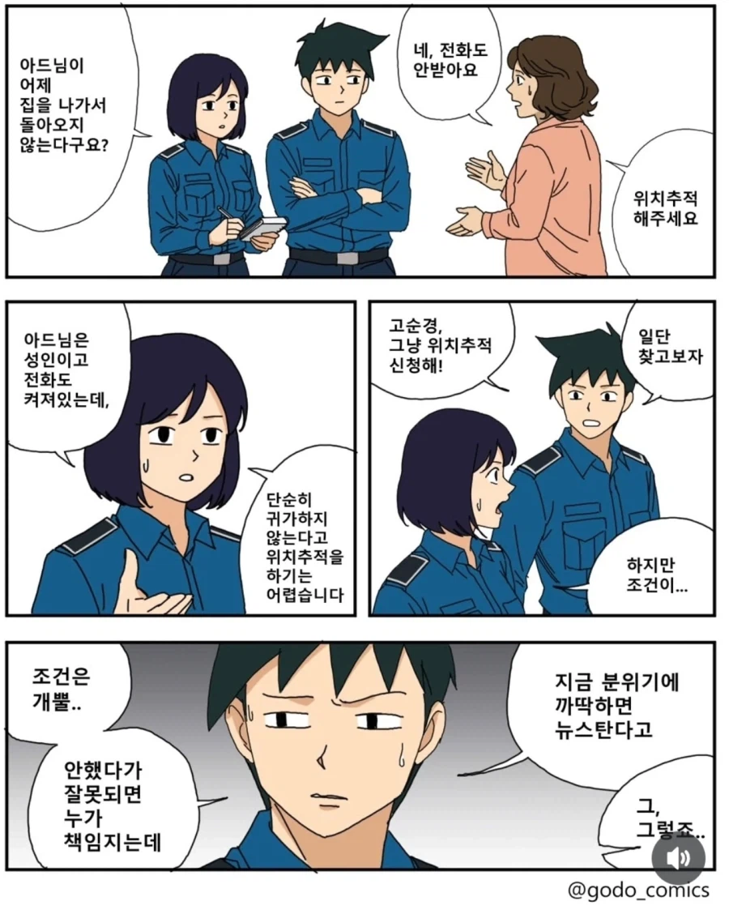

낚시 갔던 해군 봉변당했는데
당연히 찾아야지

낚시 갔던 해군 봉변당했는데
당연히 찾아야지
가만히 앉아서 세금만 축내고 싶대잖어 ㅋㄱ
실종자 수색 업무 소방에 이관해라 씹새키들아
이자식 현직 경찰이네!
블라인드 보면 오히려 소방관들이 원하던데
원래 소방 업무였고 경찰이 수당 땜에 뺏어 갔다고
아 그래? 경찰들 일 하기 싫어서 넘기려는 줄
잘못 알았네 미안
실종자 수색 업무 소방에 이관해라 씹새키들아!
그럼 본래 업무도 아닌데 뺏어가서 이 지랄로 했다는거야?
이자식 현직 경찰이네! 수당 그거 몇천원 안받고 실종수색 안하고말지 ㅋㅋㅋㅋㅋㅋ
블라 원글 사라졌는데 소방관이 쓴 글 있었음
말 되는 소리를 해라 ㅋㅋ
ㄹㅇ 견찰보다 사람 추적수색은 15공수가 더 잘할듯
여자는 같은 상황에 바로 실종조사 할거면서 자연스럽게 남자는 안란다고 말하네
실제로 성인남자는 실종신고 요건이 훨씬 까다로웠을거임
지금은 어쩔지 모르겠지만
지금도 별차이 없을듯
천룡인과 노예의 차이
3등시민은 죽던말던
그러네 실종자 뭐시기라..
아 경찰분들이 피해자셔?
아니 씨발 여경 찌찌 존나 크게 그렸네
오케이 용서할게요
너 때문에 괜히 한번 더 올라가서 봤네 ㅋㅋ
실종 조건에 남녀 구분하는건 차별이 아니냐
억울하다고 지금 쳐 그려놓은건 아니지?ㅋㅋㅋ
억울하다고 그린건 아니겠지.....
에이.... 설마 ㅋㅋㅋ
그럼 지금 원래 해야 할 일을 안 해놓고 억울하다는 건 아니겠지?
남자가 실종좀 될수도 있지
새벽두시 한파주의보에도 한남은 안찾는다
진상때문에 힘든 건 알겠는데 경찰은 해주는게 맞음
그러라고 다른 직렬보다 훨씬 페이 많이 주는 거임
일반공뭔보다 훨씬많이는 아님. 호봉급+숨만쉬면 나오는 비과세 수당 기준 일반 공뭔보다 1계급(경감,경위때)~2계급(순경때) 정도 더 주는게 끝이고 나머진 초과수당이랑 출동비로 떼우는건데 애초에 공뭔이 급수올라가도 급여가 드라마틱하게 오르지도않고(경정이랑 경감이랑 계급 1개차이인데 연봉10%밖에 차이 안남), 출동수당 4천원은뭐..다른공뭔들도 출장나가면 출장비 만원~5만원 나오고, 초과,야간수당은 근로기준법 대비 1/2(저년차)~1/3(고년차) 수준임. 순경1호봉이랑 경감30호봉이랑 과세표준구간 감안하면 세후 초과수당 이천원도 차이안남. 소방처럼 사무실에서 대기하면서 버는 수당이라고 하면 조금 적어도 이해할 수 있는 수당인데 자면서 버는 것도 아니고ㅋㅋ그래서 생각있는 애들은 경찰 안하고 경찰대출신들도 다 탈주하잖아..
뭔 ㅋㅋㅋ 아니 기준은 시발아 증거 감추고 기준은 커녕 이미 죽었겠다 싶을때까지 방치해놓고 ㅋㅋㅋ 어이가 없다
경찰의 경우는 단순 실종 의심으로 위치 추적을 하는 게 어려움
관련 서류를 통신사에 제출해야 했고, 시간도 많이 걸리는데 긴급요청 하는 경우 검찰측 허가도 필요했음
그런데 소방서 쪽은 그런 거 없이 가능함
그래서 실종 쪽은 소방쪽에 연락하라는 경우도 많았음
일단 소방쪽에서도 경찰쪽에 연락해서 통보하고 필요하면 정보도 공유함
이런 문제 때문에 경찰쪽에 사후 승인하는 형식으로 추척 요청하는 게 가능해 진 걸로 앎
검찰승인이 없어진 게 아니라서 미묘하긴 한데 아무튼 그러함
실종자 찾는 것도 기준이 있고 그냥 실종 된 거 같으니 찾아주세요 한다고 다 위치추적하고 사람 동원해서 찾으러 가는 게 아님
실제로 저걸 악용해서 스토킹 범죄를 저지르려거나 연락 차단한 예전 연인 찾는 경우도 빈번하기도 하고
찾는다고 인력 쓰고 또 그 인력 쓰는 시간 동안 다른 일 못하게 되면서 다른 진짜 급한 일처리가 늦어지는 경우도 있고
결국 경찰도 시스템에 딸린 공무원1에 불과한데
저거만해도 술 먹으러 갔다가 엄마전화 받기싫은거일수도ㅋㅋㅋ
할 일을 걍 하는거아님?
갑자기 경찰 징징거리는 글 많이 올라오네
그 여론을 국민이 만들었냐? ㅋㅋㅋㅋ
지들이 피해자인척 ㅋㅋㅋㅋ
일좀해 씨발
위치추적을 할 수 있는 메뉴얼이나 조건이 있는게 아니고, 그냥 절차가 번거로운거 뿐이야??
조건있지 당연히 ㅋㅋ 쉽게 말해서 위험성이 있어야됨
절차는 그닥?
누가보면 피해자인줄 알겠네 경찰들 ㅋㅋ
저게 편하긴해 책임안져도 돼고
거참 이상하네 요청한다고 gps 추적 해주는게 당연한 것처럼 말하는 것 같음..
ㄹㅇ 이런 건 다른 나라랑 비교 좀 해라;;;
누가 보면 경찰이 피해자라고 생각하겠다